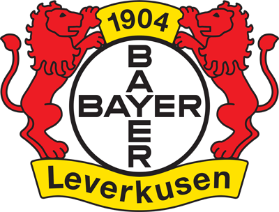
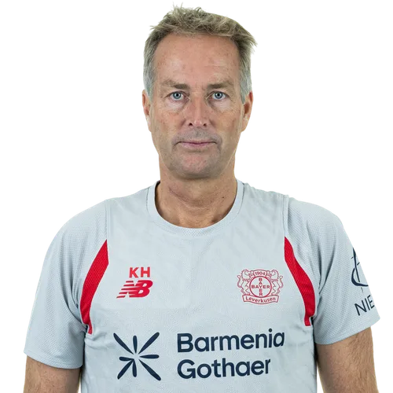
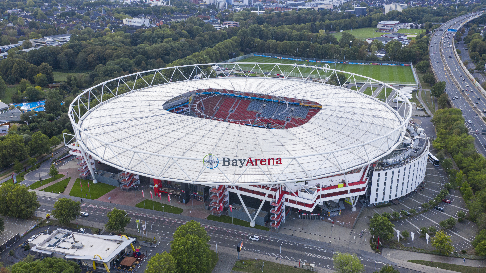

Treinador: Kasper Hjulmand
Kasper Hjulmand é o atual treinador do Bayer 04 Leverkusen, clube que comanda desde setembro de 2025 com o objetivo de o manter no topo europeu. O técnico dinamarquês ganhou prestígio mundial ao levar a sua seleção às meias-finais do Euro 2020.

Estádio: BayArena
A BayArena é o icónico estádio oficial do Bayer Leverkusen, localizada na cidade de Leverkusen. Inaugurado originalmente em 1958 sob o nome de Ulrich-Haberland-Stadion, o recinto foi completamente remodelado ao longo das décadas, transformando-se num dos estádios mais modernos, compactos e tecnológicos de toda a Bundesliga.

Estilo de Jogo:
O estilo de jogo que Kasper Hjulmand implementou no Bayer Leverkusen baseia-se num modelo de posse de bola expansiva, flexibilidade tática e solidez defensiva.
"Mit dem Kreuz auf der Brust!"